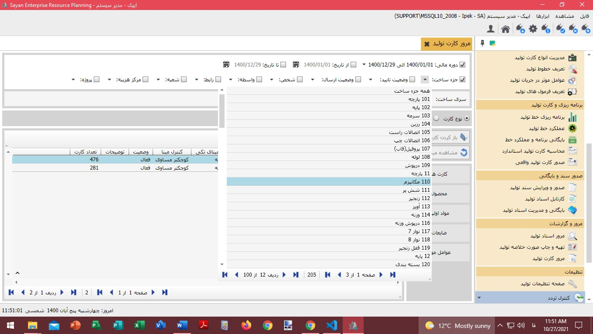

جهت مرور کارت تولید لطفا، ابتدا از منوی اصلی نرم افزار «مرور کارت تولید» را کلیک نمایید.پس از مشاهده صفحه زیر، شما می توانید، دوره مالی پیش فرض و یا بازه موردنظرتان را انتخاب نمایید. علاوه بر آن امکان انتخاب اجزائ ساخت، وضعیت تایید، وضعیت ارسال، شخص، رابط، شعبه، مراکز هزینه و پروژه جهت مرور اطلاعات قابل انتخاب می باشد. همچنین انتخاب کارت، وضعیت محصول، مواد اولیه، ضایعات و عوامل موثر در آن نیز فراهم گردیده است.
